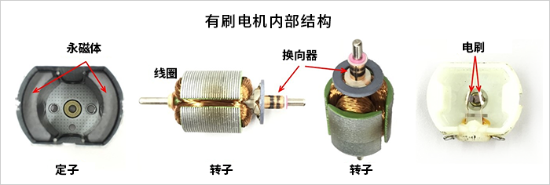

第 08 页 · 原理
≈ 30 min
前置：07 轨迹合成
电机原理 Motors
为什么通上电就会转？三种电机给出三种答案——这一页拆开看。 有刷直流：靠机械换向器（commutator，两个半环 + 电刷）自己翻转电流方向； 步进：靠脉冲通电序列一格一格吸着转子走； 无刷 BLDC：把换向器搬进电子驱动器，用霍尔传感器决定何时切换电流。 看懂这三个"换向"，电机选型就通了。
有刷直流电机 · 单匝线圈 + 换向器 + 电刷（轴向剖视）
两个核心公式：安培力 与 反电动势
F = B·I·L（左手定则） E = k·ω
F = B·I·L：通电导体在磁场中受力，B 是磁感应强度、I 是电流、L 是导体有效长度。
判断方向用左手定则——磁感线穿入手心，四指指向电流，拇指即为受力方向。
线圈两边电流相反 → 两边受力一上一下 → 形成转矩。
E = k·ω：线圈转起来后自己切割磁感线，产生反电动势（back-EMF），方向与电源电压相反。 转速越高反电动势越大，电流 I = (U − E)/R 越小——所以直流电机的转速有上限， 这也是它能用 PWM 改变电压来调速的物理根源。
E = k·ω：线圈转起来后自己切割磁感线，产生反电动势（back-EMF），方向与电源电压相反。 转速越高反电动势越大，电流 I = (U − E)/R 越小——所以直流电机的转速有上限， 这也是它能用 PWM 改变电压来调速的物理根源。
机械设计
- 电刷磨损 = 寿命瓶颈：碳刷与换向器持续摩擦，千余小时后需更换
- 换向瞬间有火花 → 电磁干扰（EMI），干扰编码器/单片机信号线
- 换向器占掉转子空间，散热差，堵转易烧线圈
机械制造
- 成品即用：两根线接上就转，无需驱动器调参
- 调速 = PWM 改平均电压；换向 = H 桥或双刀双掷开关
- 比赛里是驱动轮、履带底盘的主力：便宜、扭矩随叫随到
优点
- 结构最简单，两根线，成本最低
- 低速扭矩大、响应快（堵转也有力）
- PWM 调速 + H 桥换向，方案极其成熟
缺点
- 电刷磨损 → 寿命与可靠性瓶颈
- 换向火花 → 干扰 + 换向器氧化
- 本身不知道转没转、转多快，需外加编码器
ASABE 比赛适用
- 底盘驱动轮、履带行走（配减速箱）
- 对寿命不敏感的短时重载任务
- 要位置控制时 → 加编码器闭环（见对比总结）
